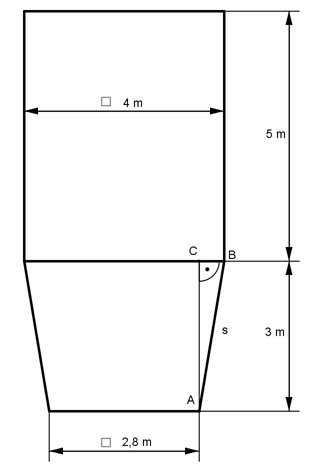
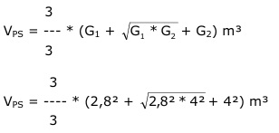

Aufgabe 273 Der Kohlenbunker ist oben offen. Wie viel m³ Kohlen fasst er, und wie groß ist der Materialbedarf M in m²?  Volumen V = Pyramidenstumpf + Prisma Pyramidenstumpf:  3 VPS = --- * (7,84 + 2,8 * 4 + 16) m³ 3 VPS = 35,04 m³ Prisma: VP = G * h = 4² m² * 5 m = 80 m³ V = VPS + VP = 35,04 m³ + 80 m³ = 115 m³ M = Grundfläche G + 4 * Seitenfläche S1 + 4 * Seitenfläche S2 Satz von Pythagoras im Dreieck ABC: 4 m - 2,8 m AB = -------------- = 0,6 m 2 s² = AB² + AC² = 0,6² m² + 3² m² = 9,36 m² |√ s = 3,06 m 4 + 2,8 M = 2,8² + 4 * ----------- * 3,06 + 4 * 4 * 5 m² 2 M = 7,84 m² + 41,6 m² + 80 m² = 129,4 m²